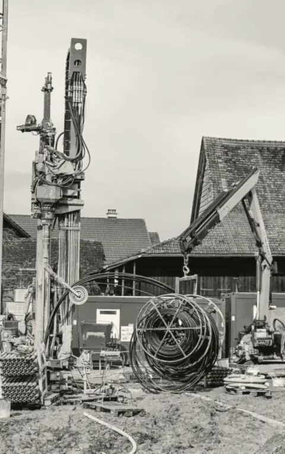
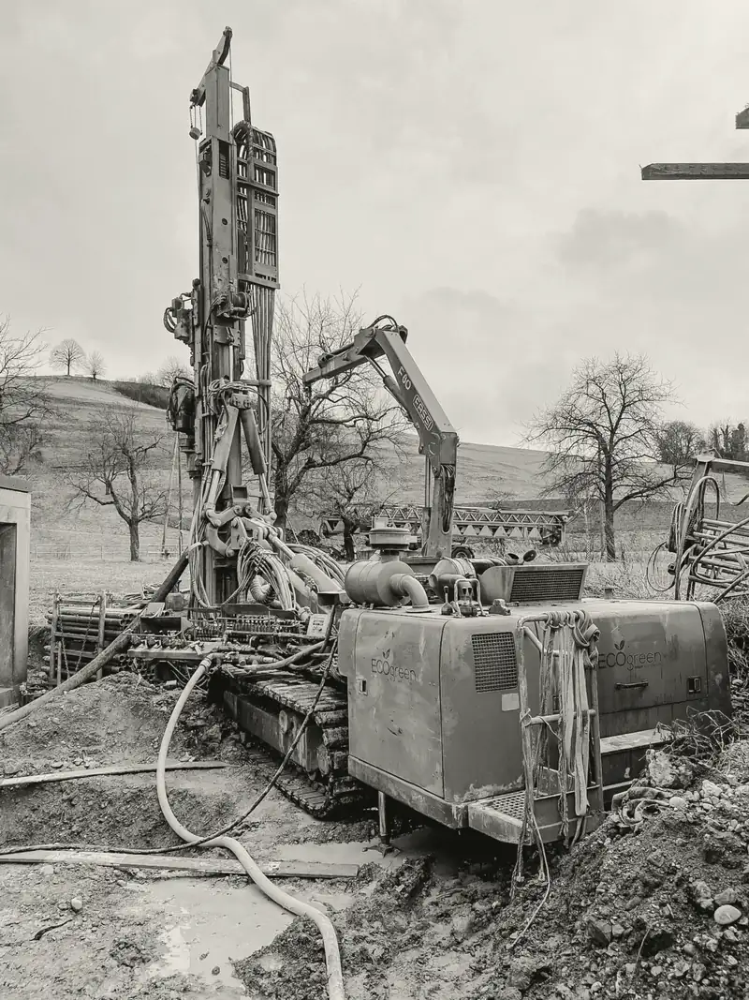
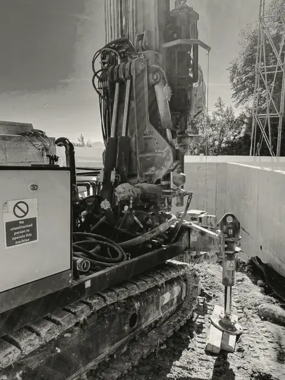
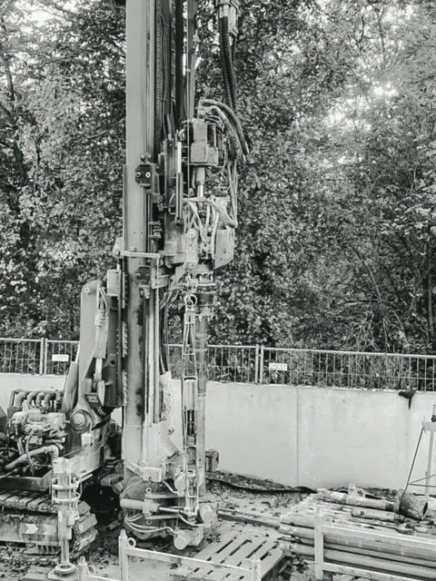
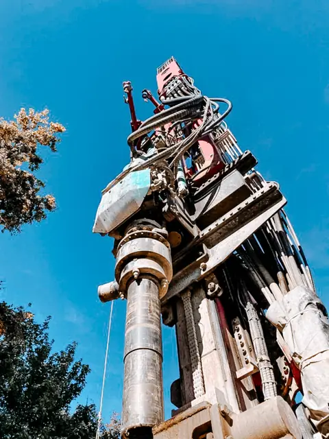
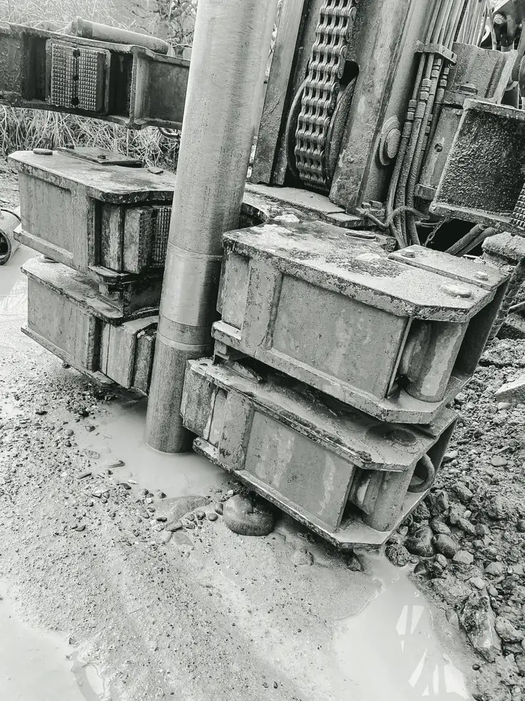
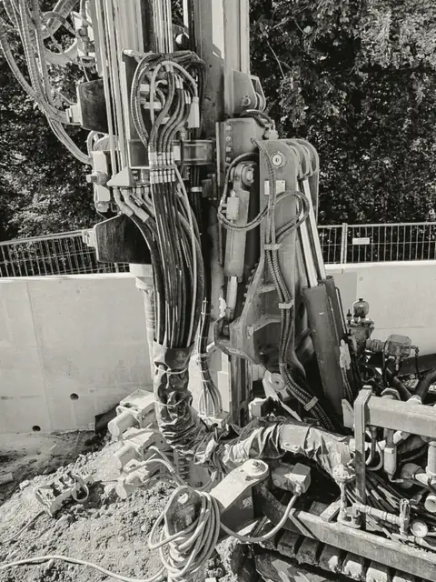

Unsere Baustellen.
Alle Bilder auf dieser Website stammen von Baustellen von Eco Green. So sehen Erdsondenbohrungen im Kanton Zürich aus.
Geräte und Baustellen.
Raupenbohrgeräte, die durch ein Gartentor passen. Und wenn nicht, über das Dach.








Typische Aufträge.
Sondenzahl und Tiefe richten sich nach dem Haus. Diese Beispiele zeigen die Spannweite.
| Objekt | Region | Ersetzt | Sonden | Besonderheit |
|---|---|---|---|---|
| Einfamilienhaus | Regensdorf | Ölheizung | 2 × 180 m | Bohrung im Garten, Zufahrt über den Vorplatz |
| Einfamilienhaus | Zürcher Unterland | Ölheizung | 1 × 230 m | Zufahrt zu eng, Gerät per Kran |
| Mehrfamilienhaus | Furttal | Gasheizung | 6 × 200 m | Sondenfeld am Siedlungsrand |
| Neubau Doppelhaus | Bezirk Dielsdorf | keine, Neubau | 3 × 160 m | Bohrung vor dem Aushub |
| Bauernhaus | Zürcher Weinland | Elektroheizung | 2 × 210 m | Bohrung zwischen Bauernhaus und Wohnhaus |
| Reihenhaus | Limmattal | Ölheizung | 1 × 200 m | eine Sonde für das ganze Haus |
Ihr Haus als nächste Baustelle?
Wir prüfen, ob auf Ihrem Grundstück gebohrt werden darf, und melden uns mit einer ersten Einschätzung zu Sonde und Förderbeitrag.
Montag bis Freitag, 07.30 bis 12.00 und 13.30 bis 17.00 UhrPumpwerkstrasse 40, 8105 Regensdorf